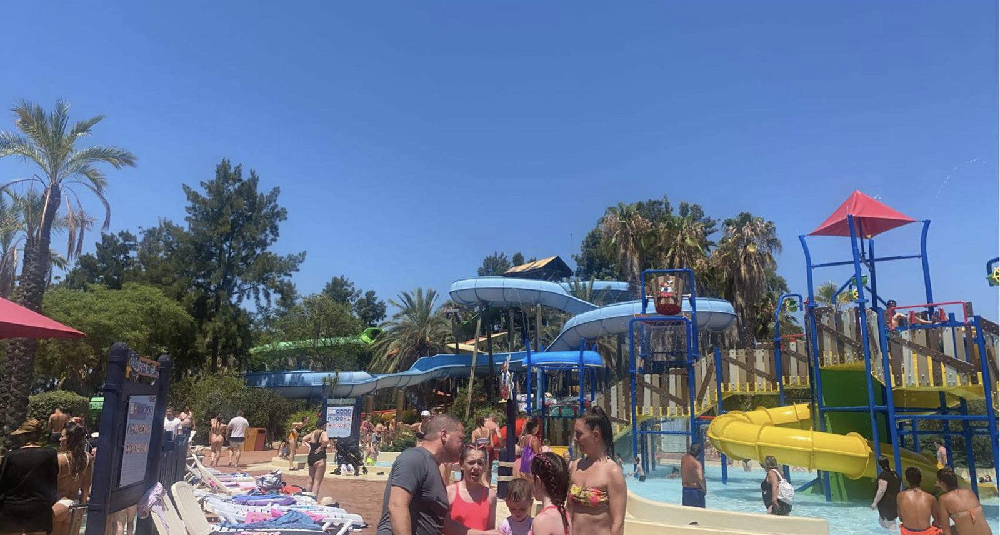

We were all sufficiently well for a water park trip. We imposed an “up-and-out”, which got us to the entrance just before official opening. I took responsibility for getting a locker while the youngsters took responsibility for the loungers. Alison had more sense and went shopping in Salou.
I successfully got a locker. The other three managed to get:
Four loungers ✅
In the shade ✅
Next to a speaker ❌
With barking dogs in a kennel just the other side of a fence ❌
30 feet down-wind of the smoking area ❌
The whole point of getting there early is to get on the big rides, so Jake demanded the Lazy River. We did half of that before queueing for the family raft ride. The girls were together as was me and Jake. The weight imbalance created a fun and splashy ride.
Next up was the head-first sledge race. The lifeguard blew her whistle for the start of the race and the Ellises all pushed hard and didn’t move an inch. Jenny set off first time so won. The rest of us got to the bottom eventually.
That was the warm-up for the scary tall red slide. We all did that. Jake and Freya stopped there so just me and Jenny walked all the way up to the super scary super tall yellow slide. The life guard demonstrated the cross-legged arms-folded position. It was fast so over quickly. I am far too classy to make a comment about Jenny not being able to cross her legs while riding.
We found a double-ring ride on our walk back, which was adequate but nothing special. The other three did the lazy river without a ring (and got told off for being ringless) while I suncreamed the top of my feet. We met at the indoor area for the last “difícil” ride.
That ride is a 1-on-1 race. I suggested a semi-final followed by final and 3rd-4th play-off. Since you could either throw yourself off at the top or just let yourself slide, we thought we could just jump to a Chris-Jenny final. However, both Ellis children wanted the see-through tube so they had to be in separate semis. It was a very bangy and fast ride so I was happy the queue got too long for another ride.
After that, people kept coming into the water park (I know - outrageous) and queueing for rides, so we splashed around in the wave pool and then the (soothing) smooth-bottomed pool. Our feet had been burning from the hot floor out of the pools and sandpaper floors in the pools.
We gave up at mid-afternoon and came back to the hotel. Alison had fun shopping, sitting and eating goats cheese salad (with croutons this time).
We were all worn out so had a lazy late afternoon. For tea, the boys went to the tapas restaurant at the hotel (beautifully ordered to maximise voucher value) while the girls did buffet (cheese and fruit for Alison, just like her Roper namesake). The boys won with cracking Ibérica ham and various croquettes, and some interesting beer choices.
Jake enjoyed two cocktails called PortAventura, which the bar menu said was coconut cream, strawberry and orange juice. The barman chatted to Jake about it while Jake was drinking it about whether he enjoyed his Jack Daniel’s with lemon and lime cocktail (and I saw him put in triple-sec). Jake loved the drink so we ordered another one later, which was the same as before but more lemony (with no coconut flavour).
Our eyes are a bit chlorinated so time to sleep before too much drinking (and biting) tonight.
